НИКОГДА НИЧЕГО НЕ ДЕЛАЙ В ПЕРВЫЙ РАЗ
Иллюстраторский интенсив в Британке
На той неделе закончился первый в истории РФ интенсив по иллюстрации, который мы вели с Ирой Троицкой и Иваном Величко. Сама по себе затея странная и можно сказать, авантюрная – тем больше облегчение от того, что слушатели в массе довольны.
На самом деле оценить успех подобного мероприятия сразу не представляется возможным. Лучшее, что мы могли сделать за неделю – это дать начинающим иллюстратором хорошего пинка в правильном (по нашему мнению, благо мнение у нас на троих более-менее одно) направлении – а как далеко пробегут, и остановятся ли потом, будет ясно где-нибудь через год. Люди на интенсив съехались самые разные, из разных стран (с Тихого океана, поверите, был гость), с разным уровнем подготовки и мотивации (крайне приятно, к слову, было обнаружить среди слушателей двух свеженьких выпускников Британки – еще раз спасибо за доверие) – так что ни о каком "общем уровне" говорить нельзя. И цель дальнейшего фотоотчета – скорее сохранить приятных воспоминаний, чем завлечь кого-то на интенсив в следующем году. Этим мы займемся ближе к делу.
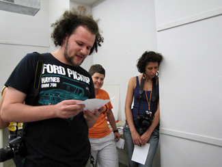
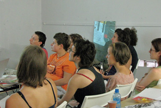
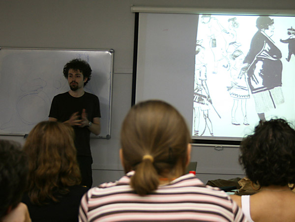
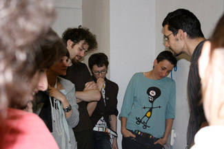
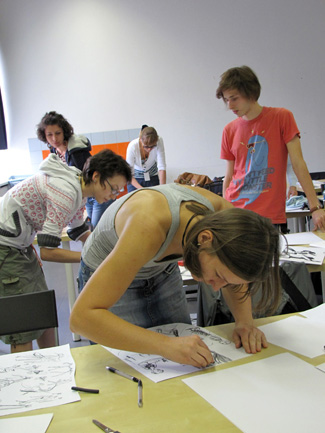
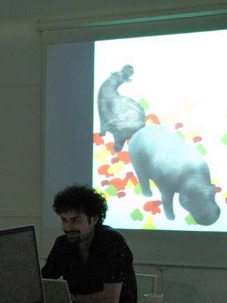
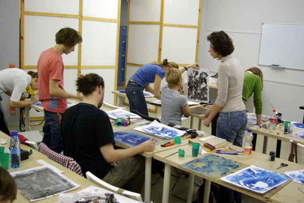
Рисунок с Ютьюба, на данный момент главное мое преподавательское изобретение. Когда только начал заниматься иллюстрацией на курсе ГДБК, пытался заставить студентов позировать самих – но это занятие неблагодарное, художники люди в массе стеснительные и зажатые. Вообще курс иллюстрации непременно должен включать уроки актерского мастерства и сценического движения. В следующем году непременно добудем соответствующего гостя.
(второй знак сверху обозначает фигуристку в пируэте)
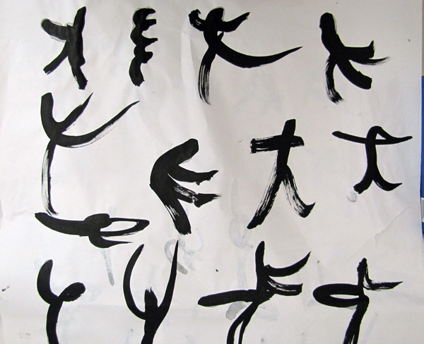
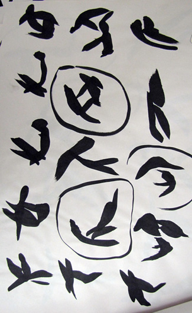
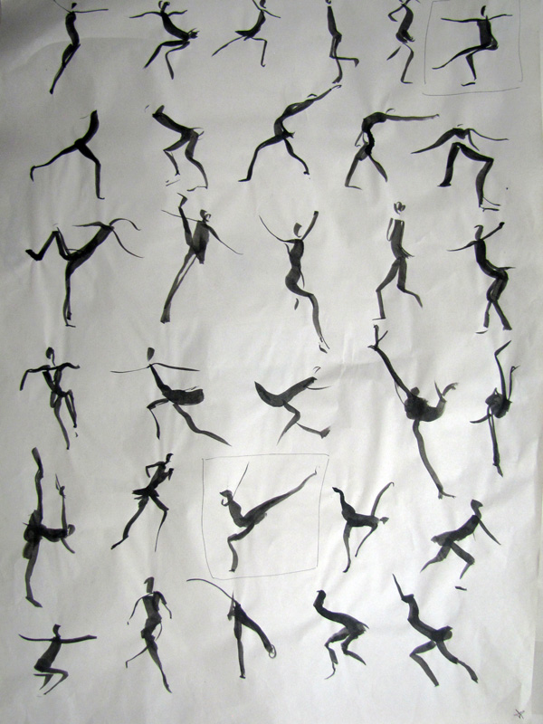
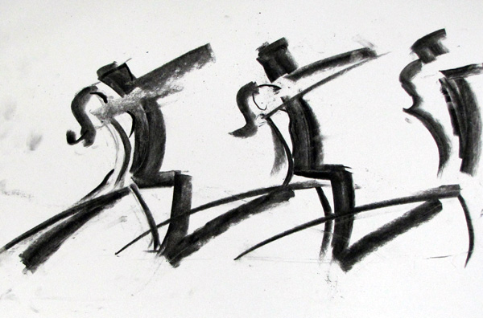
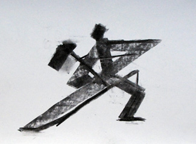
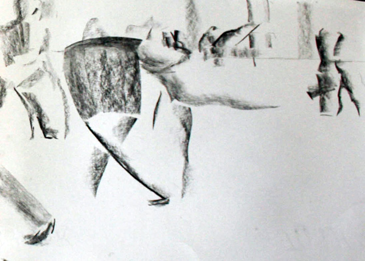
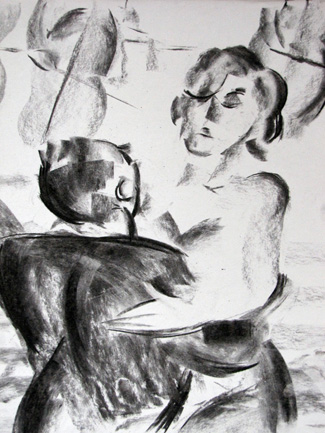
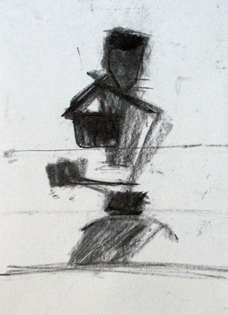
копии с Карьте-Брессона
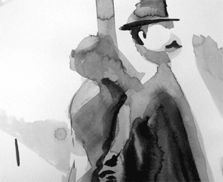
Пластилиновая иллюстрация к условному рассказу Агаты Кристи. Не стану опять агитировать за рукоделие – но это, отметьте, скульптурный пластилин, темно-серый. С ним тоже можно делать чудеса, если толково поставить свет. К слову, на каждое задание было в среднем по полтора часа. Страшно подумать, что бы эти люди сделали, дай мы им хотя бы день на одну иллюстрацию. Но интенсив, понятно, на то и интенсив.
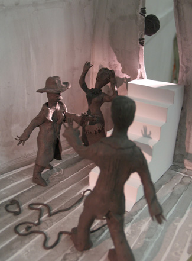
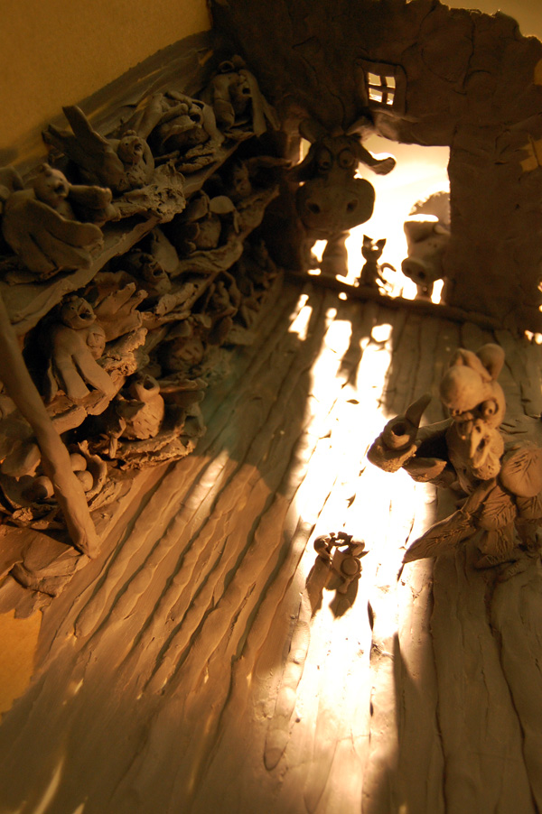
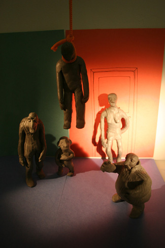
Работы по разным заданиям, долго рассказывать.
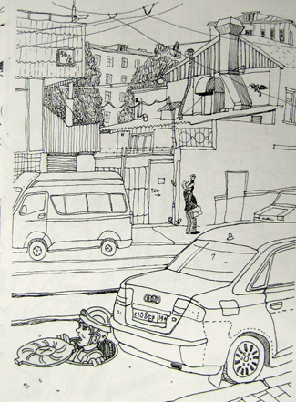
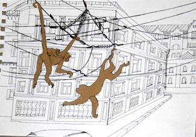
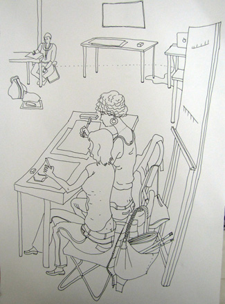
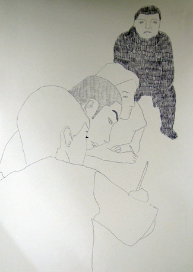
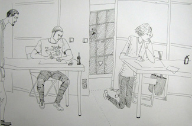
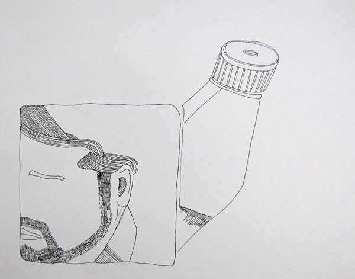
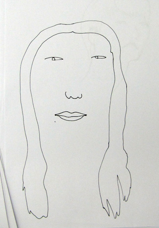
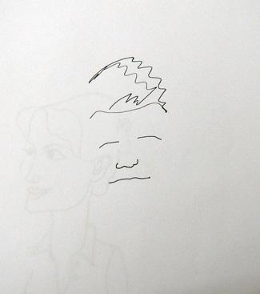
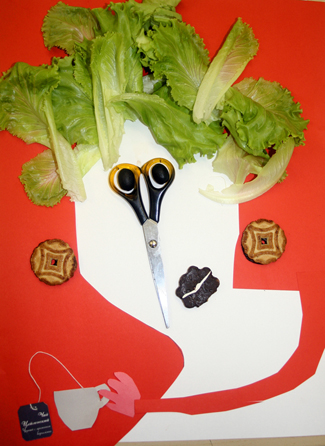
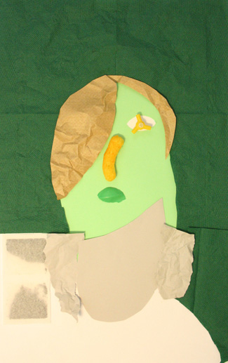
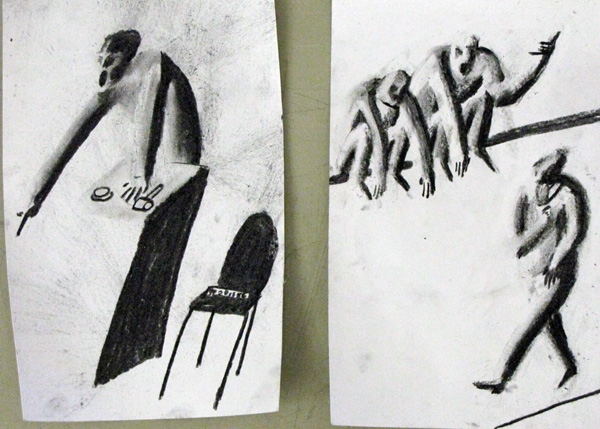
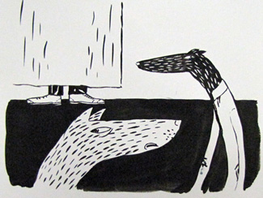
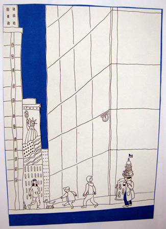
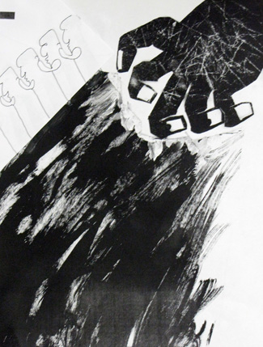
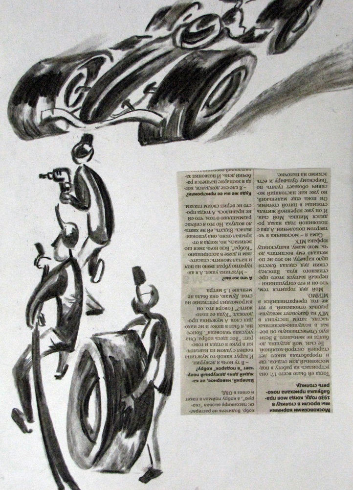
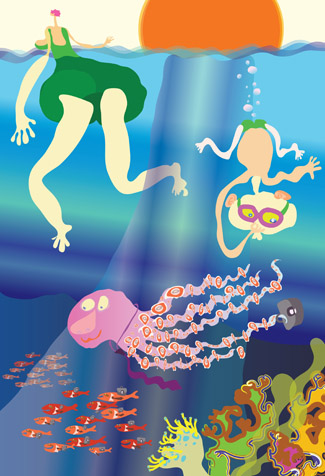
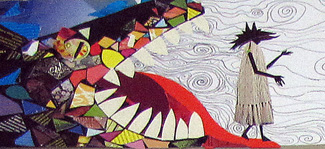
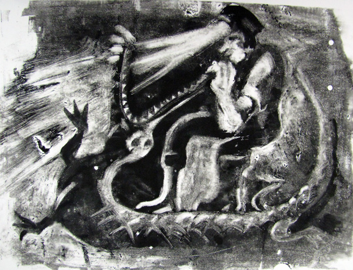
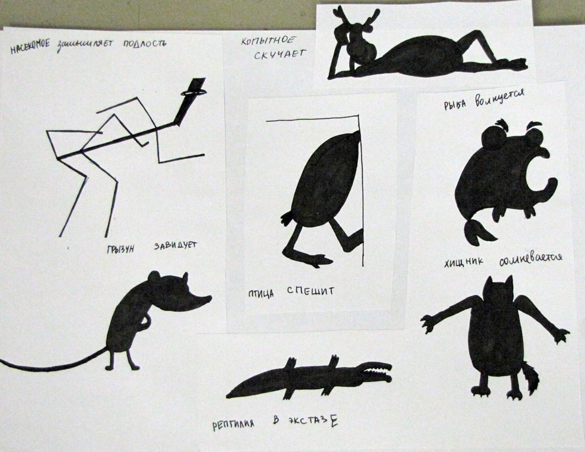
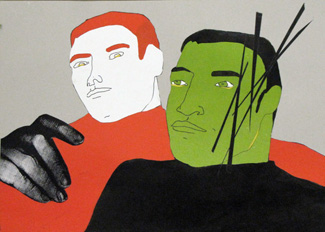
коллаж "контршпионаж"
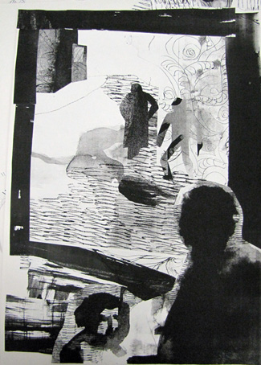
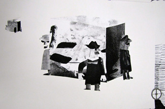
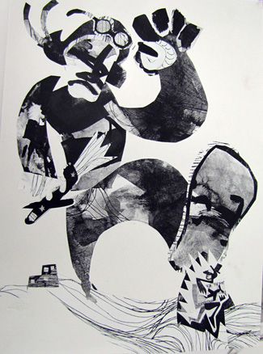
Зажигательный мастер-класс Протея Темена, из которого он обещает сделать некий продукт всем на радость, следите за рекламой.
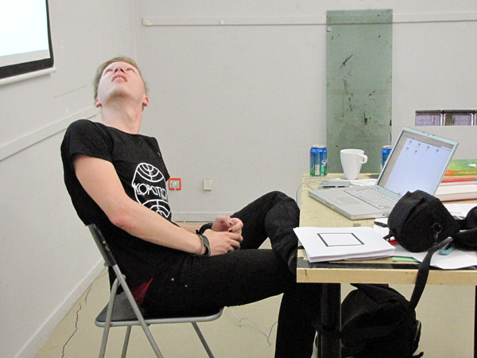
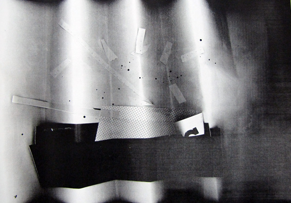
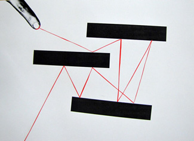
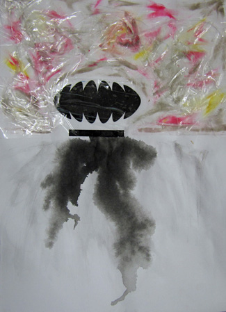
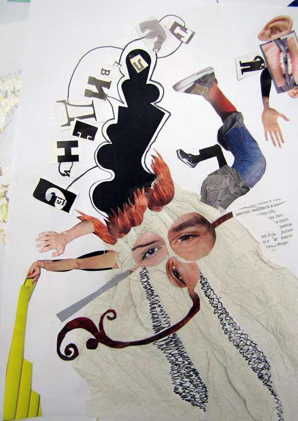
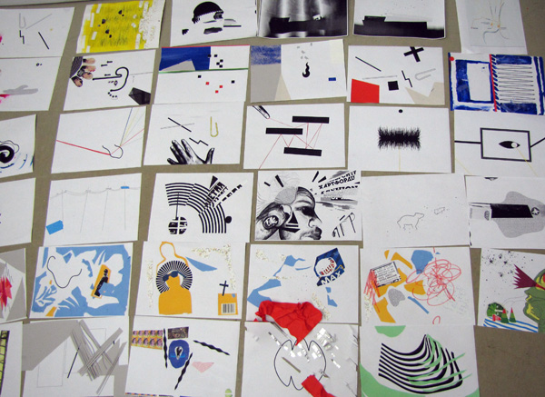
Лекция Жени Парфенова, довольно, как Иван выразился, алхимическая. Женю я как раз и позвал чтобы продемонстрировать будущим коллегам глубину и основательность идеологического подхода к иллюстрации. Уравновесить летающего Протея.
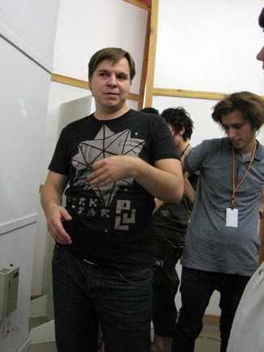
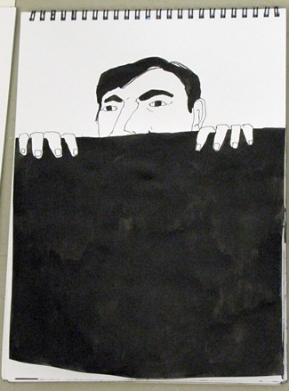
Закончили интенсив на жизнерадостной ноте – вышла Лена Плахтиенко, наш любимейший худред, и три часа рассказывала про собственные работы. Ничего занимательнее я не слышал давно, и молодые коллеги, я знаю, того же мнения. В частности, много узнал нового про себя. Соберусь с силами, напишу про Лену отдельную колонку, она крутая.
В качестве бонуса эмо-пятна на крыше КБ Туполева.
На этом, друзья, я уступаю вторничную трибуну даме и перехожу в свободный режим. Торжественно обещаю писать не реже раза в месяц.